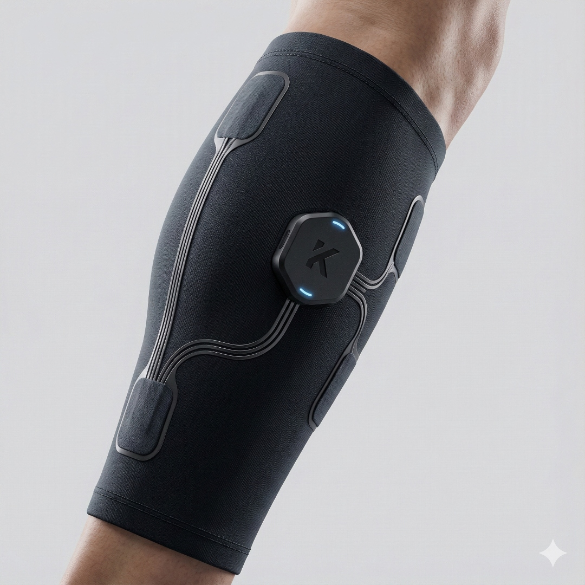

See beneath
the surface
Muscle Activation
Kineura combines wearable EMG and motion sensing to help runners and athletes understand fatigue, imbalance, biomechanics, and recovery in real time.
The problem
Pace, distance, and heart rate tell you what you did. They don't reveal which muscles fired, when fatigue set in, or whether your stride stayed balanced through the final mile.
01 · Sensing
No gel, no prep. Just put it on and go.
02 · Motion
Captures motion data from every stride.

03 · Fit
Keeps electronics precisely positioned from training runs to race day.
04 · Sync
Real-time stream. Your results are ready before you catch your breath.
No gel, no prep. Just put it on and go.
Captures motion data from every stride.
Keeps electronics precisely positioned from training runs to race day.
Real-time stream. Your results are ready before you catch your breath.
How it works
Lightweight sensors sit comfortably on the major running muscles, capturing high-fidelity EMG and motion data.
Synchronized EMG and IMU streams record activation, timing, and movement at hundreds of samples per second.
Signals become metrics: muscle activation, fatigue, stride symmetry, ground contact, cadence, and recovery.
Translate insight into smarter training, earlier intervention, and a more durable athlete.
Metrics
A focused set of metrics that turn raw biosignals into decisions you can train on. Tap any card to dive deeper.
Muscle Activation
Fatigue Index
Stride Symmetry
Ground Contact Time
Cadence & Motion Trends

Recovery Signals
App preview
Interact with the original Kineura app mockup to explore live workout metrics, EMG signal quality, muscle activation, cadence trends, and research-backed metric detail screens. Simulated data shown for product preview
Who it's for
Train with awareness. Spot fatigue and imbalance before they turn into setbacks.
Bring objective neuromuscular data into the conversation about load, form, and readiness.

Track return-to-run progress with side-by-side activation and symmetry over time.
Capture lab-grade EMG and motion data outside the lab, in real training environments.
Responsible claims
Kineura supports training insight and performance decision-making. It is not a substitute for medical diagnosis or treatment.
We design our metrics to be honest about what biosignals can and cannot tell you. When in doubt, talk to a qualified clinician.
About
Kineura started with a simple observation: the most informative signals about how an athlete moves — muscle activation and fine-grained motion — were locked inside expensive lab equipment. We're building a wearable platform that brings those signals into everyday training, without losing the rigor that makes them meaningful.
We're a small team with backgrounds in biomechanics, signal processing, and track and field. We work closely with runners, coaches, and clinicians to make sure every metric we ship earns its place on the screen.
Early access
Join the early access list to receive product updates, research notes, and an invitation when units become available.
FAQ
A wearable platform that combines surface EMG and inertial motion sensing, plus the software to turn those signals into useful metrics for runners and athletes.
No. Kineura supports training insight and performance decision-making. It is not a substitute for medical diagnosis or treatment.
We're rolling out access gradually. Join the early access list above and we'll reach out as units become available.
Signals are captured on-device and analyzed in our app. We're committed to clear, opt-in handling of any data you choose to share with us.
Running is our first focus because the movement is repeatable and well-studied. The hardware is designed to extend to all sports, and we plan to include sport-specific metrics in the future.